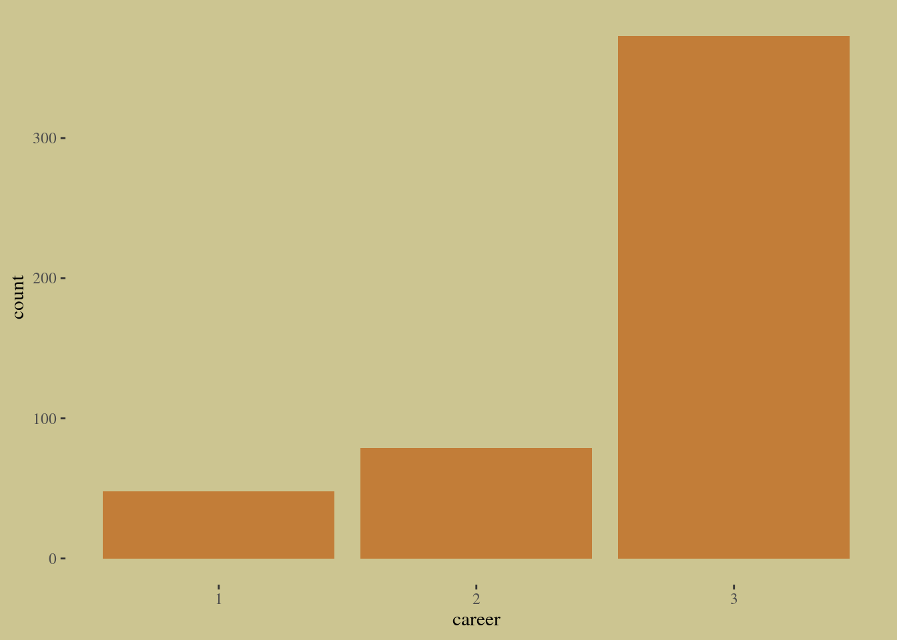
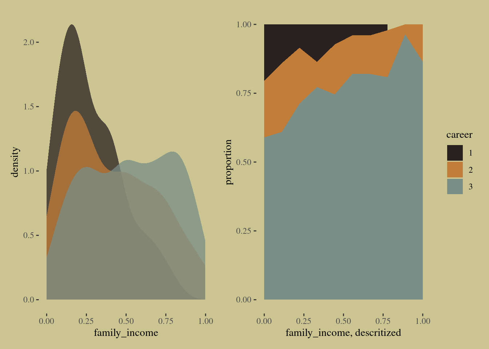
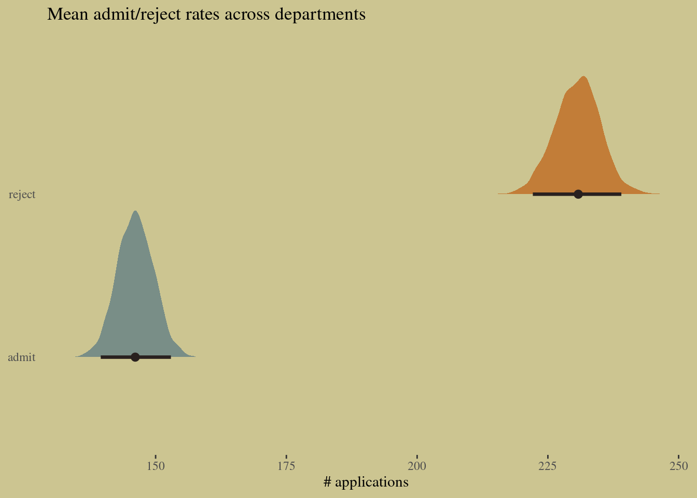
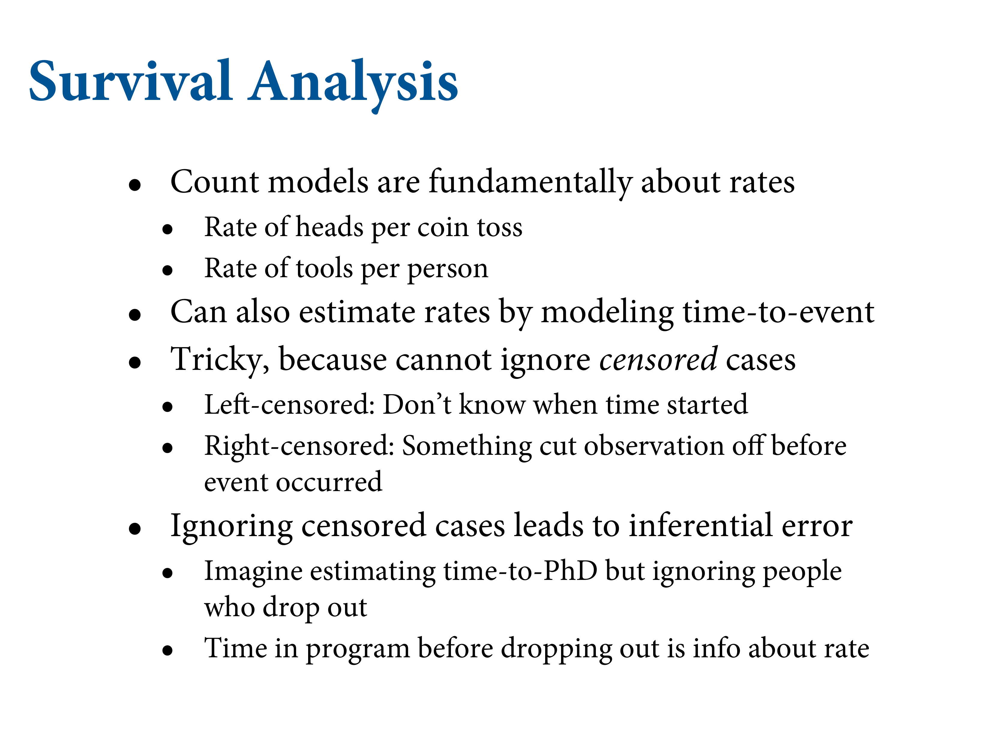

11.3 Multinomial and categorical models
When more than two types of unordered events are possible, and the probability of each type of event is constant across trials, then the maximum entropy distribution is the MULTI-NOMIAL DISTRIBUTION.
11.3.1. Predictors matched to outcomes
For example, suppose you are modeling choice of career for a number of young adults. One of the relevant predictor variables is expected income. In that case, the same parameter βincome appears in each linear model, in order to estimate the impact of the income trait on the probability a career is chosen. But a different income value multiplies the parameter in each linear model.
# simulate career choices among 500 individuals
n <- 500 # number of individuals
income <- c(1, 2, 5) # expected income of each career
score <- 0.5 * income # scores for each career, based on income
# next line converts scores to probabilities
p <- softmax(score[1], score[2], score[3])
# now simulate choice
# outcome career holds event type values, not counts
career <- rep(NA, n) # empty vector of choices for each individual
# sample chosen career for each individual
set.seed(34302)
# sample chosen career for each individual
for(i in 1:n) career[i] <- sample(1:3, size = 1, prob = p)# put them in a tibble
d <-
tibble(career = career) %>%
mutate(career_income = ifelse(career == 3, 5, career))
# plot
d %>%
ggplot(aes(x = career)) +
geom_bar(size = 0, fill = wes_palette("Moonrise2")[2])
To fit the model to these fake data, we use the dcategorical likelihood, which is the multinomial logistic regression distribution. It works when each value in the outcome variable, here career, contains the individual event types on each row. To convert all the scores to probabilities, we’ll use the multinomial logit link, which is called softmax. Then each possible career gets its own linear model with its own features. There are no intercepts in the simulation above. But if income doesn’t predict career choice, you still want an intercept to account for differences in frequency. Here’s the code:
# define the model
code_m11.13 <- "
data{
int N; // number of individuals
int K; // number of possible careers
int career[N]; // outcome
vector[K] career_income;
}
parameters{
vector[K - 1] a; // intercepts
real<lower=0> b; // association of income with choice
}
model{
vector[K] p;
vector[K] s;
a ~ normal(0, 1);
b ~ normal(0, 0.5);
s[1] = a[1] + b * career_income[1];
s[2] = a[2] + b * career_income[2];
s[3] = 0; // pivot
p = softmax(s);
career ~ categorical(p);
}
"Then we set up the data list and invoke stan:
# wrangle the data
dat_list <-
list(N = n,
K = 3,
career = career,
career_income = income)
# fit the model
m11.13 <-
stan(data = dat_list,
model_code = code_m11.13,
chains = 4)## Warning: There were 100 divergent transitions after warmup. See
## http://mc-stan.org/misc/warnings.html#divergent-transitions-after-warmup
## to find out why this is a problem and how to eliminate them.## Warning: Examine the pairs() plot to diagnose sampling problems## Warning: Bulk Effective Samples Size (ESS) is too low, indicating posterior means and medians may be unreliable.
## Running the chains for more iterations may help. See
## http://mc-stan.org/misc/warnings.html#bulk-ess## Warning: Tail Effective Samples Size (ESS) is too low, indicating posterior variances and tail quantiles may be unreliable.
## Running the chains for more iterations may help. See
## http://mc-stan.org/misc/warnings.html#tail-essprecis(m11.13, depth = 2) %>% round(digits = 2)## mean sd 5.5% 94.5% n_eff Rhat4
## a[1] -2.12 0.18 -2.43 -1.84 333.35 1.01
## a[2] -1.77 0.24 -2.19 -1.45 183.29 1.03
## b 0.12 0.11 0.01 0.33 178.03 1.03You might have gotten some divergent transitions above. Can you figure out why?
To conduct a counterfactual simulation, we can extract the samples and make our own. The goal is to compare a counterfactual career in which the income is changed. How much does the probability change, in the presence of these competing careers? This is a subtle kind of question, because the probability change always depends upon the other choices. So let’s imagine doubling the income of career 2 above:
post <- extract.samples(m11.13)
# set up logit scores
s1 <- with(post, a[, 1] + b * income[1])
s2_orig <- with(post, a[, 2] + b * income[2])
s2_new <- with(post, a[, 2] + b * income[2] * 2)
# compute probabilities for original and counterfactual
p_orig <- sapply(1:length(post$b), function(i)
softmax(c(s1[i], s2_orig[i], 0)))
p_new <- sapply(1:length(post$b), function(i)
softmax(c(s1[i], s2_new[i], 0)))
# summarize
p_diff <- p_new[2, ] - p_orig[2, ]
precis(p_diff)## mean sd 5.5% 94.5% histogram
## p_diff 0.03855332 0.03796612 0.002158311 0.1133116 ▇▅▂▂▁▁▁▁▁▁▁▁b11.13io <-
brm(data = d,
family = categorical(link = logit, refcat = 3),
career ~ 1,
prior = c(prior(normal(0, 1), class = Intercept, dpar = mu1),
prior(normal(0, 1), class = Intercept, dpar = mu2)),
iter = 2000, warmup = 1000, cores = 4, chains = 4,
seed = 11,
file = "fits/b11.13io")print(b11.13io)## Family: categorical
## Links: mu1 = logit; mu2 = logit
## Formula: career ~ 1
## Data: d (Number of observations: 500)
## Samples: 4 chains, each with iter = 2000; warmup = 1000; thin = 1;
## total post-warmup samples = 4000
##
## Population-Level Effects:
## Estimate Est.Error l-95% CI u-95% CI Rhat Bulk_ESS Tail_ESS
## mu1_Intercept -2.01 0.15 -2.31 -1.72 1.00 2772 2314
## mu2_Intercept -1.53 0.12 -1.78 -1.30 1.00 2699 2599
##
## Samples were drawn using sampling(NUTS). For each parameter, Bulk_ESS
## and Tail_ESS are effective sample size measures, and Rhat is the potential
## scale reduction factor on split chains (at convergence, Rhat = 1).11.3.2. Predictors matched to observations
n <- 500
set.seed(11)
# simulate family incomes for each individual
family_income <- runif(n)
# assign a unique coefficient for each type of event
b <- c(-2, 0, 2)
career <- rep(NA, n) # empty vector of choices for each individual
for (i in 1:n) {
score <- 0.5 * (1:3) + b * family_income[i]
p <- softmax(score[1], score[2], score[3])
career[i] <- sample(1:3, size = 1, prob = p)
}# put the data in a tibble
d <-
tibble(career = career) %>%
mutate(family_income = family_income)
p1 <-
d %>%
mutate(career = as.factor(career)) %>%
ggplot(aes(x = family_income, fill = career)) +
geom_density(size = 0, alpha = 3/4) +
scale_fill_manual(values = wes_palette("Moonrise2")[c(4, 2, 1)]) +
theme(legend.position = "none")
p2 <-
d %>%
mutate(career = as.factor(career)) %>%
mutate(fi = santoku::chop_width(family_income, width = .1, start = 0, labels = 1:10)) %>%
count(fi, career) %>%
group_by(fi) %>%
mutate(proportion = n / sum(n)) %>%
mutate(f = as.double(fi)) %>%
ggplot(aes(x = (f - 1) / 9, y = proportion, fill = career)) +
geom_area() +
scale_fill_manual(values = wes_palette("Moonrise2")[c(4, 2, 1)]) +
xlab("family_income, descritized")
p1 + p2
b11.14 <-
brm(data = d,
family = categorical(link = logit, refcat = 3),
bf(career ~ 1,
nlf(mu1 ~ a1 + b1 * family_income),
nlf(mu2 ~ a2 + b2 * family_income),
a1 + a2 + b1 + b2 ~ 1),
prior = c(prior(normal(0, 1.5), class = b, nlpar = a1),
prior(normal(0, 1.5), class = b, nlpar = a2),
prior(normal(0, 1), class = b, nlpar = b1),
prior(normal(0, 1), class = b, nlpar = b2)),
iter = 2000, warmup = 1000, cores = 4, chains = 4,
seed = 11,
file = "fits/b11.14")print(b11.14)## Family: categorical
## Links: mu1 = logit; mu2 = logit
## Formula: career ~ 1
## mu1 ~ a1 + b1 * family_income
## mu2 ~ a2 + b2 * family_income
## a1 ~ 1
## a2 ~ 1
## b1 ~ 1
## b2 ~ 1
## Data: d (Number of observations: 500)
## Samples: 4 chains, each with iter = 2000; warmup = 1000; thin = 1;
## total post-warmup samples = 4000
##
## Population-Level Effects:
## Estimate Est.Error l-95% CI u-95% CI Rhat Bulk_ESS Tail_ESS
## a1_Intercept -1.28 0.27 -1.82 -0.76 1.00 2354 2697
## a2_Intercept -1.01 0.22 -1.44 -0.59 1.00 1893 1987
## b1_Intercept -2.51 0.58 -3.70 -1.41 1.00 2347 2531
## b2_Intercept -1.21 0.42 -2.02 -0.37 1.00 1837 1954
##
## Samples were drawn using sampling(NUTS). For each parameter, Bulk_ESS
## and Tail_ESS are effective sample size measures, and Rhat is the potential
## scale reduction factor on split chains (at convergence, Rhat = 1).b11.14 <- brms::add_criterion(b11.14, "loo")
loo(b11.14)##
## Computed from 4000 by 500 log-likelihood matrix
##
## Estimate SE
## elpd_loo -330.5 17.0
## p_loo 3.4 0.3
## looic 661.0 33.9
## ------
## Monte Carlo SE of elpd_loo is 0.0.
##
## All Pareto k estimates are good (k < 0.5).
## See help('pareto-k-diagnostic') for details.11.3.3. Multinomial in disguise as Poisson
Another way to fit a multinomial/categorical model is to refactor it into a series of Poisson likelihoods.180 That should sound a bit crazy. But it’s actually both principled and commonplace to model multinomial outcomes this way. It’s principled, because the mathematics justifies it. And it’s commonplace, because it is usually computationally easier to use Poisson rather than multinomial likelihoods. Here I’ll give an example of an implementation. For the mathematical details of the transformation, see the Overthinking box at the end.
I appreciate that this kind of thing—modeling the same data different ways but getting the same inferences—is exactly the kind of thing that makes statistics maddening for scientists. So I’ll begin by taking a binomial example from earlier in the chapter and doing it over as a Poisson regression. Since the binomial is just a special case of the multinomial, the approach extrapolates to any number of event types. Think again of the UC Berkeley admissions data. Let’s load it again:
data(UCBadmit, package = "rethinking")
d <- UCBadmit
rm(UCBadmit)Now let’s use a Poisson regression to model both the rate of admission and the rate of rejection. And we’ll compare the inference to the binomial model’s probability of admission. Here are both the binomial and Poisson models:
# binomial model of overall admission probability
b11.binom <-
brm(data = d,
family = binomial,
admit | trials(applications) ~ 1,
prior(normal(0, 1.5), class = Intercept),
iter = 2000, warmup = 1000, cores = 3, chains = 3,
seed = 11,
file = "fits/b11.binom")
# Poisson model of overall admission rate and rejection rate
b11.pois <-
brm(data = d %>%
mutate(rej = reject), # 'reject' is a reserved word
family = poisson,
mvbind(admit, rej) ~ 1,
prior(normal(0, 1.5), class = Intercept),
iter = 2000, warmup = 1000, cores = 3, chains = 3,
seed = 11,
file = "fits/b11.pois")Let’s consider just the posterior means, for the sake of simplicity. But keep in mind that the entire posterior is what matters. First, the inferred binomial probability of admission, across the entire data set, is:
# extract the samples
post <- brms::posterior_samples(b11.pois)
# wrangle
post %>%
mutate(admit = exp(b_admit_Intercept),
reject = exp(b_rej_Intercept)) %>%
pivot_longer(admit:reject) %>%
# plot
ggplot(aes(x = value, y = name, fill = name)) +
tidybayes::stat_halfeye(point_interval = median_qi, .width = .95,
color = wes_palette("Moonrise2")[4]) +
scale_fill_manual(values = wes_palette("Moonrise2")[1:2]) +
labs(title = " Mean admit/reject rates across departments",
x = "# applications",
y = NULL) +
theme(axis.ticks.y = element_blank(),
legend.position = "none")
#k <- coef(m_pois)
#a1 <- k['a1']; a2 <- k['a2']
#exp(a1)/(exp(a1)+exp(a2))That’s the same inference as in the binomial model.



Scientific grant awards.
slides_dir = here::here("docs/slides/L13")This course is like this. The lectures are circles, and the homework is the owl. The book has a lot more detail. What it doesn’t get quite right about science is that science doesn’t know what the owl looks like. There are many many owls that would be satisfactory. There’s not some perfect platonic owl.
![Poisson is a count distribution. 0 to infidinty. Arises where there's some unkown maximum count, but the rate of each trial is very low. This is a very handy way to model counts. This is a very small dataset. Theory that says you get more innovation with larger populations, and therefore more complicated toolkits. Dashed line is for low-contact, solid for high-contact. That's the other interacting effect in the model. Hawaii has low contact. All the others are near one another. Easy to get from one to the other. There's a strong relationship with log population. There's massive uncertainty with large population sizes because there are no high-contact islands with large populations. On the right it's the same curve, but squished. If you calculate the predicted out-of-sample with the Pareto-k, you can find which points are adding uncertainty in prediction. Hawaii has high leverage because it has an order of magnitude higher population, so it's the only one informing what happens on the high end. What could you do? Not drop Hawaii from the analysis, but drop Hawaii playfullly to see what happens. And perhaps you could see there's still a trend for the low-population islands.](slides/L13/03.png)
Poisson is a count distribution. 0 to infidinty. Arises where there’s some unkown maximum count, but the rate of each trial is very low. This is a very handy way to model counts. This is a very small dataset. Theory that says you get more innovation with larger populations, and therefore more complicated toolkits. Dashed line is for low-contact, solid for high-contact. That’s the other interacting effect in the model. Hawaii has low contact. All the others are near one another. Easy to get from one to the other. There’s a strong relationship with log population. There’s massive uncertainty with large population sizes because there are no high-contact islands with large populations. On the right it’s the same curve, but squished. If you calculate the predicted out-of-sample with the Pareto-k, you can find which points are adding uncertainty in prediction. Hawaii has high leverage because it has an order of magnitude higher population, so it’s the only one informing what happens on the high end. What could you do? Not drop Hawaii from the analysis, but drop Hawaii playfullly to see what happens. And perhaps you could see there’s still a trend for the low-population islands.
![Before we leave this example, here are some criticisms, which extend in general to GLMs. They're unreasonably effective. But, they generate a bunch of anomolies. If you know variables external to the model, they can produce ridiculous effects. If the first time you draw up a quantitative model, something ridiculous happens because you've left something out. Here the first weird thing is the intercept doesn't go through 0. For any real relationships, the 0s have to go together: 0 people = 0 tools. This GLM doesn't assert that because it has a free intercept. This isn't a total disaster. Also this weird thing where they cross.](slides/L13/04.png)
Before we leave this example, here are some criticisms, which extend in general to GLMs. They’re unreasonably effective. But, they generate a bunch of anomolies. If you know variables external to the model, they can produce ridiculous effects. If the first time you draw up a quantitative model, something ridiculous happens because you’ve left something out. Here the first weird thing is the intercept doesn’t go through 0. For any real relationships, the 0s have to go together: 0 people = 0 tools. This GLM doesn’t assert that because it has a free intercept. This isn’t a total disaster. Also this weird thing where they cross.
Let’s run a simple model of the system. We want a dynamical systems model. Over time individuals make tools. We start with delta t which is the change in number of tools in a given timestep.
Then there’s a rate of alpha - how many tools can each person invent? You get more people, you get more tools. The beta is an elasticity. That governs the diminishing returns. People get lazy if other people are making them. So the more people you have, the fewer new inventions you get per person.
Then there’s the loss. People forget them, or you don’t need to use them anymore. Now we’ll fit this to data. We’ve got 3 parameters.

This model implies a time series. We can use the same model in a cross-sectional case - we need an expectation. We can solve them for steady states where after a while the processes are balanced, where \(\Delta T = 0\). On the left we have a hat over T = AlphaP to the Beta over gamma is the expected number of tools. Still stochastic, but the mean of the stationary distribution. Then can stick it into the Poisson. Better than Generalized Linear Madness, because the intercept is fixed here.

Can just write this into a Markov chain. Same idea, but now for lambda there’s no link function. The only trick is that all these parameters needs to be positive. You have an array of tools to do that. One is to exponenentiate the parameter, which is what I’ve done with alpha. This is just a trick for making alpha positive. You’re taking a log normal now. For the other two I give them exponential distributions.
Chains happen, and you can compare the two models. The scientific model has flaws, but now it passes through the origin. And you get real separation nwo between the solid and dashed lines. Now the violations mean something. And the parameters have biological meaning. You can use epxerimental datasets to get information about the parameters.
Every particular scientific example has its own idiosyncracies. So why teach GLMs? Because they’re useful for everyone. If the different counts have different exposures or observation windows. If someone spends twice as much time fishing, we have to adjust for the exposure difference. How to do this? Use an offset, which is a log of the amount of time spent fishing.

There are other count distributions. Multinomial categorical models are extrapolations to more than two unordered outcomes. Geometric distributions are count distributions. Mixtures are binomial regressions, but allow the rates to vary in each case. Like multi-level models where you don’t estimate the random effects.
![I want to motivate this. They're like count models because they have discrete events. In this dataset it's cat adoptions. But to do this properly, you need to estimate the rate of the events. The parameters are about rates, and survival is counts. So imagine some lonely cat, and it's waiting to be adopted, and then it escapes. We don't know whether the cat would ever be adopted or not. The wrong this to do is throw it away, because it's still importnat to know how long it was waiting. So we have to count things that weren't counted. e.g. escaped, died of natural causes, whatever. This is called censoring. Left-consoring is when we don't know when the cat arrived. Right censoring is where at the time of counting they haven't been adopted yet.](slides/L13/13.png)
I want to motivate this. They’re like count models because they have discrete events. In this dataset it’s cat adoptions. But to do this properly, you need to estimate the rate of the events. The parameters are about rates, and survival is counts. So imagine some lonely cat, and it’s waiting to be adopted, and then it escapes. We don’t know whether the cat would ever be adopted or not. The wrong this to do is throw it away, because it’s still importnat to know how long it was waiting. So we have to count things that weren’t counted. e.g. escaped, died of natural causes, whatever. This is called censoring. Left-consoring is when we don’t know when the cat arrived. Right censoring is where at the time of counting they haven’t been adopted yet.

20K cats from the Austin animal facility. Lots of things we know about them. Interested in adoption rates. In particular we want to compare all other cats to black cats. There are adoption events, so given some assumption about the rate. And want to predict what will happen given you’re waiting a certain amount of times. Some die, some escape, and pure censoring is the cat is still there when we pulled the data. Epidemiological studies are like this.

The simplest kind of distribution for survival analysis is exponential. So the probability of getting adopted that day comes fromt he exponential distribution.

Measures the probability that it hasn’t happened after a certain length of time.
You’re really just coding the log-posterior here. It’s raw stuff. If adopted = 0, now we’re censored, so we need CCDF. When it sees a culstom tag, you can do a lot of dangerous things.
Black cats are discriminated against. There’s a column for cat colours.